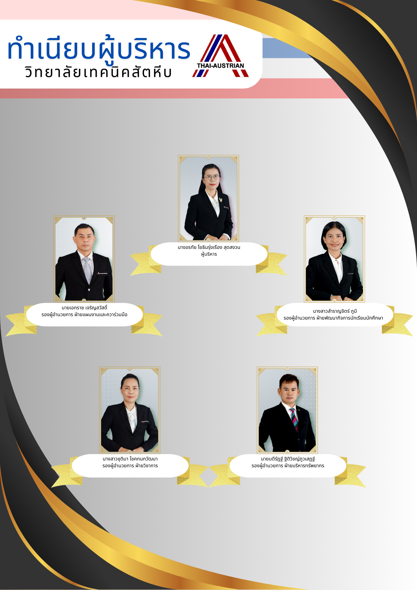

ทำเนียบผู้บริหาร

1. นาย ประพัฒน์ แสงวนิช พ.ศ. 2512 - พ.ศ. 2513
2.นาย สงวน แก้วมรกต พ.ศ. 2513 - พ.ศ. 2513
3. นาย สกุล เวชชกร พ.ศ. 2513 - พ.ศ. 2519
4. นาย จรุง ผาสุวรรณ พ.ศ. 2520 - พ.ศ. 2522
5. นาย จรูญ ชูลาภ พ.ศ. 2522 - พ.ศ. 2528
6. นาย สงวน บุญปิยทัศน์ พ.ศ. 2528 - พ.ศ. 2530
7. นาย เชิดเซลง ชิตชวนกิจ พ.ศ. 2530 - พ.ศ. 2531
8. นาย วิชัย ป้อมประเสริฐ พ.ศ. 2531 พ.ศ. 2535
9. นาย สุชิน วังบรรพต พ.ศ. 2535 พ.ศ. 253
10. นาย ทรงสวัสดิ์ ทิพย์คงคา พ.ศ. 2538-พ.ศ. 2540
11. นาย สมศักดิ์ สุหร่ายคิมหันต์ พ.ศ. 2540 - พ.ศ. 2541
12. นาย พิษณุ จงโพบูลย์สวัสดิ์ พ.ศ. 2541- พ.ศ. 2545
13. นาย วัชระ อนุศาสนกุล พ.ศ. 2545 - พ.ศ. 2551
14. นาย สมชาย ธำรงสุข พ.ศ. 2551-พ.ศ. 2553
15.นาย วัชรินทร์ ศิริพานิช พ.ศ. 2553-พ.ศ. 2559
16. นาย ศักดิ์ชัย ธีระประทีป พ.ศ. 2559-พ.ศ. 2560
17. นาย วิชัย หาญพลาชัย พ.ศ. 2560 - พ.ศ. 2562
18. นาง อรทัย โยธินรุ่งเรือง สุดสงวน พ.ศ. 2562 - ปัจจุบัน